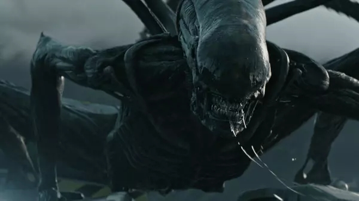
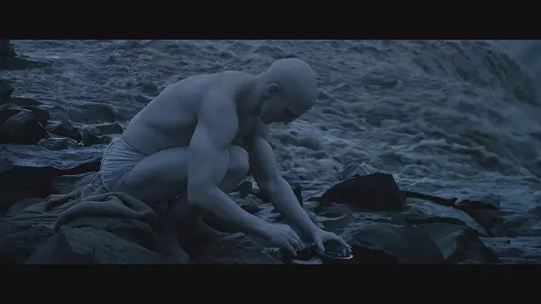

《异形：契约》：天道有常，因果有报
| 本文作者：Zhang_Yao_Yao | 2017-06-19 20:37 |
《异形：契约》看上去是一部恐怖惊悚片，但它又不完全如此。从恐怖惊悚方面看，《异形：契约》的表现中规中矩。有观众说它还不如同期的《异星觉醒》，这话也不能说一点没道理。毕竟，《异星觉醒》是全程都在努力惊吓观众的，而《异形：契约》压根就没往这方面打算。
事实上《异形：契约》与《异星觉醒》不应该放在一起比较。前者属于庞大的“异形”宇宙，它有自己融入这个宇宙的方式，它的价值是放到整个宇宙中来评判的；而后者只是一部单纯的恐怖惊悚片，它的价值是通过吓没吓到观众来评判的。
对于不了解“异形”宇宙的观众而言，导演雷德利·斯科特爵士（Sir Ridley Scott）执导的“异形”前传系列——《普罗米修斯》（2012）和《异形：契约》（2017）——都令人费解。从类型上看，这两部都算是恐怖惊悚片，但恐怖惊悚片爱好者却要失望了——它们既不是很恐怖也不是很惊悚，比《异形》（1979）肯定是差远了；从内容上看，它们还充满了晦涩且暧昧不清的情节，对普通观众尤其是不了解“异形”宇宙的观众非常不友好。
不过，对“异形”粉丝而言，这两部电影就算拍成纪录片也好看。因为这两部电影并不像是当年的《异形》，或是今年的《异星觉醒》那样，目的在于惊吓观众；它们的目的是补全“异形”宇宙的信息，并且更重要的是完成此前四部“异形”电影都没能彻底完成的：让异形不再是一个纯粹的恐怖符号，带领观众深入“异形”这一骇人外表之下的内在，引发观众的思考。
首先，在补全信息方面，《异形：契约》承上启下，既填坑又挖坑。
它填的最重要的一个坑是，交代了前作《普罗米修斯》结尾唯一的人类幸存者伊丽莎白·肖的命运，交代了人类的造物主工程师母星的命运，明确了人造人大卫的前传系列第一主角的地位。
另外，电影完善了异形的进化体系。至目前为止，异形有三大主要支系：
《异形》四部曲中的Xenomorph；
《普罗米修斯》中的Deacon；
《异形：契约》中的Neomorph。
当然还有其他小支系，在此按下不表。
《异形：契约》还展现了可能是历史上第一只寄生在人体中的异形（Xenomorph）的诞生。

但同时，《异形：契约》所给出的每一个问题的答案，都会引出更多的问题：
譬如，感染“契约”号殖民者的微粒（Motes）及其所在的蛋袋（Egg Sack）是从哪里来的？它与《普罗米修斯》中的黑色液体（Black Liquid）有什么关系？注意前者是可以直接从人体背部孵出白色异形（Neomorph），而后者只会让人发生变异。

又如，伊丽莎白是如何沦为大卫的试验品的？她是自愿还是被害？
最后，自《普罗米修斯》中发展起来的四大种族世界观——工程师、人类、人造人、异形，四者之间的关系到了《异形：契约》中仍旧纠缠不清。首先，人类与人造人、人类与异形的关系已经很明确了，而工程师与人造人之间并无直接关系，那么就还有三对关系存疑：
第一，工程师与人类：工程师是否有意制造了人类？如果是有意，那么目的何在？

第二，工程师与异形：《普罗米修斯》中LV-223上的工程师基地中已经有了关于异形的壁画，《异形》中那艘坠毁在LV-426的工程师飞船也装满了异形卵（Ovomorph），是不是工程师早已经通过黑色液体研制出了异形？
第三，人造人与异形：詹姆斯·卡梅隆（James Cameron）执导的1986年的《异形2》中异形卵是由异形之母孵出的；而本片中大卫也有异形卵，莫非大卫孵化出了一只异形之母？
显然，雷德利好不容易逮到了拓展自己当年点子的机会，不想一次说太多。而他挖的这些坑，吊足了粉丝的胃口。
《异形：契约》忙着给“异形”宇宙填坑挖坑，但有一些事情没有做好，比如去吓唬观众，比如去塑造角色。
电影的恐怖惊悚效果，如前所说，只是中规中矩。雷德利当年执导的《异形》，已经在恐怖惊悚方面登峰造极，他无意也无法在重复当年的辉煌。于是我们只在《异形：契约》的结尾看到雷德利象征性地重温了当年的飞船幽闭恐惧，而效果也就是那么回事。
而且《普罗米修斯》与《异形：契约》都是，各式角色走马观花出来秀了一圈，最后大部分都领了便当。就连《异形：契约》的女主角丹尼尔斯看上去也是一个刻板的功能性角色，套路多过创意。最关键的是大多数人类角色都太蠢了，蠢到家了，黑人类也不是这么个无脑黑的黑法。故事的结局，也毫无意外可言。
雷德利年事已高，颇有心有余力不足之感。而且看得出为了商业性娱乐性做了一些妥协。
但雷德利年纪大归年纪大，他还是那个有追求的英国佬。他不但想完善自己当年的点子，更想对这个点子做更深的挖掘。
指针拨回到《异形》上映的时间。伴随着上世纪6、70年代科技的突飞猛进，科技乐观主义弥漫，人类越来越自信自己能够且理应主宰地球。此时亦有许多科幻电影，通过剥离人类的中心地位，表达了对这种“人类中心论”的担忧与反思。例如1968年《人猿星球》中将人类与猩猩的地位对调，于是当人类对动物做的种种平常事情，被施加到人类自己头上时，就变成了难以直视的暴行，讽刺意味油然而生。
1979年上映的《异形》，尽管总体上是一部以恐怖惊悚为目的的电影，但仍旧或多或少地包含了对“人类中心论”的讽刺。电影中，异形与人类的战斗是一种纯粹的生存之战，而且异形是一种生存能力远胜人类的生命。此外，异形固然致命，但人类自身的缺陷——冷漠、盲从、懦弱，才最终敲响了自己的丧钟。两相对比，实在让人看不出人类有什么可值得骄傲的。
《异形》之后的三部“异形”电影，虽然都不是雷德利执导的，但接棒的导演——詹姆斯·卡梅隆 （James Cameron）、大卫·芬奇（David Fincher）、让-皮埃尔·热内（Jean-Pierre Jeunet）——也都是大师或日后的大师。尽管风格迥异，但他们都抓住了“异形”系列的核心：对人类自身的反思。
可以说，“异形”电影，骨子里都有对人类的深深的“鄙视”。“异形”电影中绝大多数人类角色都是令人生厌的，自私、自大、自以为是，“人类的劣根性”展露无遗；而异形作为一种纯粹、原始、生存能力远胜于人类的生灵，反衬出人类的脆弱。即便如此，人类仍然一次次作死，整个系列几乎就是在展现人类如何毁于自己的狂妄加愚蠢。
但是，1979-1997年的四部“异形”电影又完全是不同的风格，对人类的反思也呈现出不同的角度和方式：《异形》是一部风格黑暗的恐怖片，《异形2》是一部讽喻政治的动作片，《异形3》是一部展现宗教的文艺片，《异形：复活》是一部探讨伦理的动作片。
显然，四位导演都有自己的思考，但这种思考并不系统。
所以，在拿回“异形”的导筒后，雷德利决定回到起点，拍摄前传系列，通过搭建系统的世界观，系统地反思人类。
所以，想在这个前传系列继续看异形大开杀戒的观众，恐怕要失望了。前传系列的重点在阐述雷德利对人类与宇宙关系的认识，有着严肃的哲学主题，不注重娱乐（尽管它可能为了商业性做了一些妥协）。
通过《普罗米修斯》和《异形：契约》，我们看到雷德利的四大种族世界观初见雏形：在这个世界观中，工程师创造了人类，人类创造了人造人，而工程师和人造人可能都创造了异形。
在雷德利的这个体系中，人类不再处于中心地位；事实上，人类的命运始终岌岌可危：人类的造物主想抹除人类，人类的造物想背叛人类——而他们的工具则是异形。
通过这个体系，雷德利教育我们不应该再把人类现在的统治地位视作理所应当。人类很可能是更广阔的体系的一部分，而且很可能并不处于顶端。我们现在所拥有的一切，很可能已经有人拥有过；并且未来还将为他人所拥有。
就如同大卫在毁灭工程师母星时，神灵一般站在城市顶端，注视着黑水炸弹雨点般落下，生灵涂炭，口中缓缓念出的那句英国诗人雪莱的诗句说的那样：
Look on my Works, ye Mighty, and despair!
功业盖世，料天神大能者无可及！
（晚枫 译）
这实在是全片最令人窒息的一幕，场面与台词高度契合，达到了史诗的高度。
大卫所引诗句来自雪莱的《奥斯曼狄斯（Ozymandias），是刻在埃及法老奥斯曼狄斯的墓碑上的歌颂法老的话。奥斯曼狄斯是希腊人的叫法，他就是公元前十三世纪的埃及法老拉美西斯二世（Ramses II）。
奥斯曼狄斯功业盖世，然而接下来雪莱便讽刺道：
Nothing beside remains. Round the decay
而今一切荡然无存。偌大的废墟，
Of that colossal wreck, boundless and bare
残骸四周只有那苍茫荒凉的戈壁，
The lone and level sands stretch far away.
孤寂黄沙向远方铺展，无边无际。
（晚枫 译）
大卫引用这句的意思显然是讽刺工程师纵然是造物之主，也抵不过时间，逃不过覆灭的命运。
更讽刺的是，造物的造物，毁灭了造物主的造物主。
那么聪明的观众就应该在这里想到，工程师尚且如此，人类呢？
这就是雷德利所建立的四大种族世界观所希望阐明的宇宙间的冰冷逻辑。
这种逻辑，人类都明白；但它的恐怖，普通人平日里是感受不到的。比如说，有人信奉“弱肉强食”的丛林法则，可能只是因为他们没有体会过弱者的滋味。等到从高高在上到被踩在脚下时，这些丛林法则的信徒是否还会坚持自己的信仰？
雷德利还在这个世界观中展现了一种微妙的因果联系。也就是说，虽然毁灭终将来临，但它并非无妄之灾，而通常是自己早年酿下的恶果。
比如工程师在LV-223基地里制造了生化武器，结果基地人员被反噬；在更大的时间尺度上，工程师创造了人类，最终毁于人类的造物大卫之手。
人类也是一样。在《普罗米修斯》中，哈罗威轻描淡写地对大卫说：“我们创造了你是因为我们可以。”然后就转身去寻找自己存在的意义。这种双标只会启发大卫去像人类一样寻找自己存在的意义，去像人类一样创造，最终创造出异形，人类的毁灭者。
总而言之，充斥全片的阴谋、背叛、杀戮、挣扎，赋予了《普罗米修斯》与《异形：契约》独特的黑暗气质，而这黑色气质之内包裹的是“天道有常、因果有报”的冰冷哲学命题。这是比电影的恐怖惊悚效果、异形起源故事等更吸引我的地方。
最后，通俗地总结一下“异形”故事的核心思想：
1、工程师和人类天天吃饱了撑的，不是蠢就是坏，别看现在牛逼迟早都是要死的；
2、而且你们是自己把自己作死的；
3、异形这种纯粹为了生存的生物万古长青。